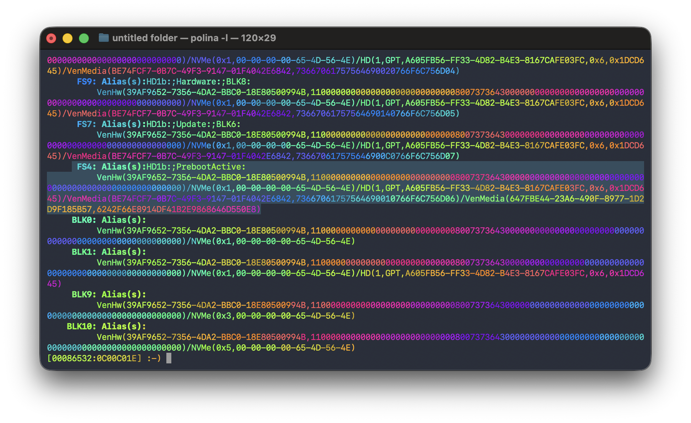
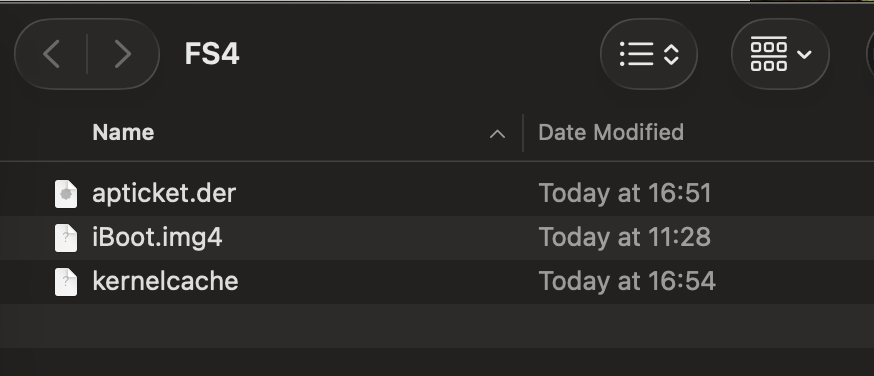

Extract bootchain and APTicket
Here I will address 2 cases. First, if you have a switch, get iBoot, APTicket, and kernel from /private/preboot/ via ssh.$: iproxy 2222 22
$: ssh root@localhost -p2222
passwword: alpine
If the device is LLDiags (Low Level Diags), please see the following instructions.
Your device is currently in recovery mode. Access the iBoot shell and enter the command
]diags
To find where iBoot, APTicket, kernel is located, enter the command map to find preboot
[xxxxxx-xxxxx] :-) map

In this case, my iboot, APTicket, kernel is in FS4. I will provide the path and how to extract it. Please follow these steps.
Please note your FS may not be the same as mine. Make sure it is a preboot like the picture I provided.
This command will list the contents of this folder,this is just an example of how to search, don't worry, I will provide the path.
[xxxxxx-xxxxx] :-) Ls FS4:\usr\standalone\firmware\
Next, we'll discuss how to extract them. Interestingly, we need those three files to boot the ramdisk.Instructions on how to create restore ramdisk will be provided later.
Now we will create a new folder to copy those files.
$: mkdir -p ~/Desktop/FS4
Now open a new terminal tab and enter the following command.
$: usbfs -f ~/Desktop/FS4
In the diag, run the following command.
[xxxxxx-xxxxx] :-) usbfs --mount
Great! Now let's copy those files into the FS4 folder.
[xxxxxx-xxxxx] :-) cp FS4:\System\Library\Caches\apticket.der usbfs:\apticket.der
[xxxxxx-xxxxx] :-) cp FS4:\System\Library\Caches\com.apple.kernelcaches\kernelcache
usbfs:\kernelcache
[xxxxxx-xxxxx] :-) cp FS4:\usr\standalone\firmware\iBoot.img4 usbfs:\iBoot.img4

Done!, so you've got the iboot. Next, let's decrypt it.